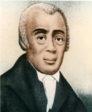

AME Church History
The AMEC grew out of the Free African Society (FAS) which Richard Allen, Absalom Jones, and others established in Philadelphia in 1787. When officials at St. George’s MEC pulled blacks off their knees while praying, FAS members discovered just how far American Methodists would go to enforce racial discrimination against African Americans. Hence, these members of St. George’s made plans to transform their mutual aid society into an African congregation. Although most wanted to affiliate with the Protestant Episcopal Church, Allen led a small group who resolved to remain Methodists. In 1794 Bethel AME was dedicated with Allen as pastor. To establish Bethel’s independence from interfering white Methodists, Allen, a former Delaware slave, successfully sued in the Pennsylvania courts in 1807 and 1815 for the right of his congregation to exist as an independent institution. Because black Methodists in other middle Atlantic comm unities encountered racism and desired religious autonomy, Allen called them to meet in Philadelphia to form a new Wesleyan denomination, the AME.
The geographical spread of the AMEC prior to the Civil War was mainly restricted to the Northeast and Midwest. Major congregations were established in Philadelphia, New York, Boston, Pittsburgh, Baltimore, Washington, DC, Cincinnati, Chicago, Detroit, and other large Blacksmith's Shop cities. Numerous northern communities also gained a substantial AME presence. Remarkably, the slave states of Maryland, Kentucky, Missouri, Louisiana, and, for a few years, South Carolina, became additional locations for AME congregations. The denomination reached the Pacific Coast in the early 1850’s with churches in Mother Bethel Church Stockton, Sacramento, San Francisco, and other places in California. Moreover, Bishop Morris Brown established the Canada Annual Conference.
The Great History of Allen Temple
THE GREAT HISTORY OF ALLEN TEMPLE In 1866, immediately after Emancipation, many ex-slaves with their families settled in Southeast Atlanta in what was known as Summerhill. Many of the people loved the principles of the African Methodist Church and there was a desire on their part to establish a church in this community.
There was an A.M.E. Church on Jenkins Street at the time and a committee from Summerhill visited this church and requested that someone be sent to organize a church for them. Elder J. A. Wood was designated as the person to organize this church in the Summerhill community. In the Spring of 1866 under the leadership of Elder Wood, a Brush Arbor was built at the corner of Crumbley and Martin Streets, where the first service was held.
After holding service in the Brush Arbor several times and prayer meetings in the different homes in the community, a Lot was acquired to build a foundation at the corner of Hammock Place and Martin Street. Here the first Church was built. It was named Wood’s Chapel in honor of Reverend Wood who remained as Senior Pastor until 1869.
Reverend A.G. Gonickey, George Washington, Taylor, Lowe and Lazarus Gardner served as Reverend Wood’s immediate successors until he was appointed to another church. It seems that this church was destined from the beginning to be a beacon of light in the community. In line with this vision, the members were inspired to purchase a Lot further up in the community on a higher hill to carry out the mission of being a light in this community, doing great work for the Kingdom of God. Later Reverend John Yeiser, who came to the church from Rhode Island, had a larger vision. The site which they had purchased was sold; a new site, the one on which Allen Temple stood for 75 years, was purchased and he succeeded in carrying the congregation into the first unit of the $50,000 edifice. The new church was called Allen Temple in memory of the founder of the A.M.E. Church, Bishop Richard Allen.